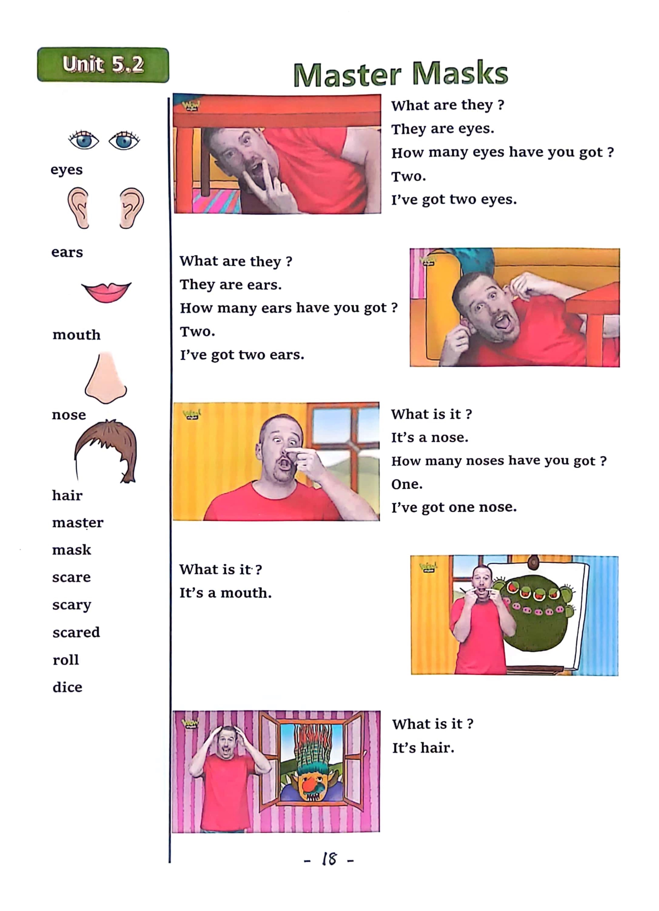

Day 18
Unit 6 · story
教材重点
教材重点依据网盘文件“第四级绿色每日打卡全.pdf”，PDF 第 20 页对应 Day 18；以原图为准，避免对图片文字做不可靠的自动识别。
网盘教材重点原图 · PDF 第 20 页对应 Day 18

Unit 6 · story · 6–7岁
like · fish · time · say
Hello, hello, my name's Steve.
台词本为机器转写，可能存在识别误差；不等同于视频逐字原声。
详细内容
Part 1 核心词汇
必须掌握 · 4 个Part 2 跟读句型与句型拓展
左侧保留台词本原句，右侧为替换练习；拓展内容不是视频逐字台词。
Hello, hello, my name's Steve.
It's time to play. It's time to play in English.
Chicken.
Fish chips.
Soup and sandwich, I don't like so delicious.
Part 3 台词本全文
来源：第4级台词本 · 018.Wow!Green - Unit 6 story2.pdf。以下保留网盘 PDF 的机器转写文本，仅清理了文件路径页眉和空行。
Hello, hello, my name's Steve.
It's time to play. It's time to play in English.
Chicken.
Fish chips.
Soup and sandwich, I don't like so delicious.
Maggie, eat your soup, you'll be hungry later when I'm not here. Remember.
I'm going camping this weekend, oh, hey, hello, boys and girls, I'm eating a delicious soup.
Maggie doesn't like soup, no, nay, do you like soup I do if you like soup, say with me.
I like soup.
So say, who in me do you like soup? Yeah,
I like soup, and again, I like soup here. Last time, I like soup.
Hello,
Um,
Delicious, finished home, maggie, eat your so now, dear right.
I'm going camping, and I need to get a little picnic ready.
Bye, maggie, I'll see you later, but I, oh, I don't like soup, and I'm hungry.
Hey, what Steve doing in the kitchen. Let's see.
Hey, I'm going fishing on my camping trip, but if I don't catch any fish, hey, I've got, oh.
As sandwich here, oh, maggie likes sandwiches, and I like sandwiches.
Hey, do you like sandwiches here, then make a happy face and say with me.
I like sandwiches, and again,
I like sandwiches one more time, I like sandwiches great. Okay, I'll put the sandwich.
In my picnic basket, but one sandwich won't be enough. I might still be hungry.
Who I know I've got some chicken in the fray.
Who, whoa, a sandwich. I like sandwiches. Yeah. HA. Ha.
Chicken.
Oh, but I can't eat a whole chicken. No. I'll just take out this chicken leg.
Hey, do you like chicken? Yeah, if you do make a happy face and say.
I like chicken, and again, I like chicken. Last time, I like chicken. Great.
But hey, if you don't like chicken, make a sad face and say, I.
/
-
/4/018.Wow!Green - Unit 6 story2.txt[2022/3/29
星期二
6:49:30]
Don't like chicken, and again, I don't like chicken one more time, I don't like chicken. Well,
I'm sorry you don't like chicken, but.
I do, it's delicious. I'm going to put it in my picnic basket.
Right I've got everything ready, it's time to go, I'll see you there, OK?
Let's go chicken. Ah, where are all the.
Oh, no, it's getting late, and I'm hungry.
And a little bored, I wish Maggie was here.
Oh, oh, I've caught a fish. I've caught a fish, oh, great, I've got a fish for dinner.
Oh, hey, hello, look, look, it's a fish, oh,
I like fish. It's delicious. Do you like fish here?
If you do make a happy face and say, I like fish, and again,
I like fish. Last time, I like.
Fish, great. Oh, my fish is nearly done.
Fish, oh, I don't like that Fish hold dear.
But hey, I've got my picnic, oh, where's my picnic basket?
There it is, oh, I'm lucky that I've got my picnic, who with that chicken and a delicious sandwich.
What's that noise? Oh, doesn't matter because I'm really hungry. Where's that chicken.
M-I like chicken hoo hoo, hey, that's not a chicken leg, that's Maggie's leg.
They.
Monkey is it really you? Yeah, but where am I? Okay?
Did you eat my chicken Oh yes. Sorry. And my sandwich.
Sorry, stay home, maggie, I'm really, really hungry.
Hey, I can help Steve with some muggy magic.
Steve, would you like some fish and chips, fish and chips.
Wow. Hey.
Fish and chips, thank you. Maggie, hey, I like chips.
Do you like chips? Yeah, so make a happy face and say with me.
I like chips, and again, I like chips one more time, I like.
Oh, delicious, see you next time, boys and girls. Bye for now, bye, bye.
He.